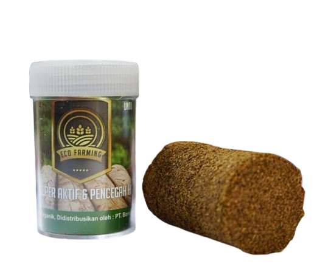
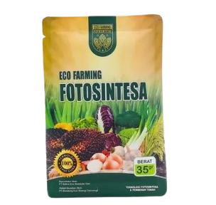

Produk Kami

Pupuk Organik Ecofarming
- Memperbaiki Tekstur Tanah
- Mencegah Hama Tanaman
- Meningkatkan Hasil Produksi
- Meningkatkan Kualitas Produksi
- Mempercepat Masa Panen
- Meringankan Biaya Produksi

Pupuk Bestfarm Slow Release
- Meningkatkan dan memaksimalkan Buah menjadi lebih Besar 10-50%
- Meningkatkan Hasil Buah lebih cepat
- Meningkatkan imun Tanaman
- Meningkatkan kesuburan tanah
- Mempercepat Masa Panen
- MMempercepat pertumbuhan Tanaman
- Mengurangi dan mencegah buah Trek

Pupuk Saegrow
- Efisiensi penyerapan nutrisi
- Ramah lingkungan
- Cocok untuk tanaman batang besar dan keras
- Meningkatkan kesuburan tanah
- Keseimbangan pH Tanah
- Pengembangan Akar yang Baik

Pupuk Fotosintesa
- Membantu tanaman memanfaatkan energi matahari secara optimal
- Meningkatkan daya tahan tanaman terhadap penyakit
- Menguatkan kulit kayu dan batang tanaman
- Membantu perkembangan akar dan menghasilkan serat berkualitas
- Mempercepat tanaman buah berbunga
- Memperbaiki Kualitas Tanaman